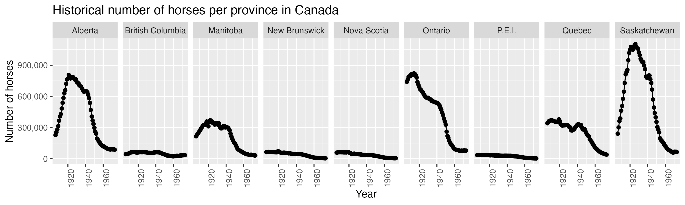
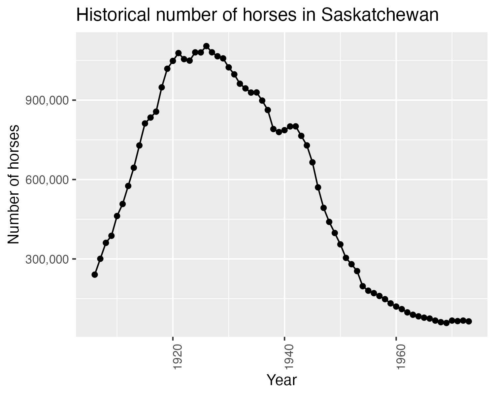

| Province | Std |
|---|---|
| Saskatchewan | 377265.58 |
| Ontario | 266435.32 |
| Alberta | 266063.19 |
| Manitoba | 122403.87 |
| Quebec | 111411.10 |
| New Brunswick | 22019.49 |
| Nova Scotia | 19879.25 |
| British Columbia | 14945.66 |
| P.E.I. | 11355.75 |
DSCI 310: Historical Horse Population in Canada
Aim
This project explores the historical population of horses in Canada between 1906 and 1972 for each province.
Data
Horse population data were sourced from the Government of Canada’s Open Data website (Government of Canada 2017a, 2017b).
Methods
The R programming language (R Core Team 2019) and the following R packages were used to perform the analysis: knitr (Xie 2014), tidyverse (Wickham 2017), and Quarto (Allaire et al. 2022). Note: this report is adapted from Timbers (2020).
Results

We can see from Figure 1 that Ontario, Saskatchewan and Alberta have had the highest horse populations in Canada. All provinces have had a decline in horse populations since 1940. This is likely due to the rebound of the Canadian automotive industry after the Great Depression and the Second World War. An interesting follow-up visualisation would be car sales per year for each Province over the time period visualised above to further support this hypothesis.
Suppose we were interested in looking in more closely at the province with the highest spread (in terms of standard deviation) of horse populations. We present the standard deviations in Table 1.
Note that we define standard deviation (of a sample) as
\[s = sqrt( sum_{i = 1}^n(x_i - \bar{x}) / (n-1))\]
Additionally, note that in Table 1 we consider the sample standard deviation of the number of horses during the same time span as Figure 1.

In Figure 2 we zoom in and look at the province of {r} largest_sd, which had the largest spread of values in terms of standard deviation.
References
Allaire, J. J., Charles Teague, Carlos Scheidegger, Yihui Xie, and Christophe Dervieux. 2022. “Quarto.” https://doi.org/10.5281/zenodo.5960048.
Government of Canada. 2017a. “Horses, Number on Farms at June 1 and at December 1.” Open Government - Open Data. https://open.canada.ca/data/en/dataset/a3ecf553-8ec4-4551-a0fe-8df1472c6cf7.
———. 2017b. “Horses, Number on Farms at June 1, Farm Value Per Head and Total Farm Value.” Open Government - Open Data. https://open.canada.ca/data/en/dataset/e175ef9c-98f0-49b3-8131-ca0e3895a0cb.
R Core Team. 2019. R: A Language and Environment for Statistical Computing. Vienna, Austria: R Foundation for Statistical Computing. https://www.R-project.org/.
Timbers, Tiffany. 2020. Historical Horse Population in Canada. https://github.com/ttimbers/equine_numbers_value_canada_parameters.
Wickham, Hadley. 2017. Tidyverse: Easily Install and Load the ’Tidyverse’. https://CRAN.R-project.org/package=tidyverse.
Xie, Yihui. 2014. “Knitr: A Comprehensive Tool for Reproducible Research in R.” In Implementing Reproducible Computational Research, edited by Victoria Stodden, Friedrich Leisch, and Roger D. Peng. Chapman; Hall/CRC. http://www.crcpress.com/product/isbn/9781466561595.